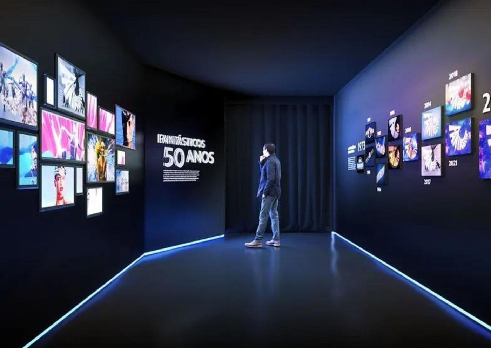

Foto — Divulgação
Exposições
Antigo Museu da Casa Brasileira recebe exposição especial dos 50 anos do “Fantástico”
Está rolando desde o último dia 20 de setembro no Solar Fábio Prado a exposição “Fantástico - O Show da Vida” que conta em pequenos pedaços interativos a histór…